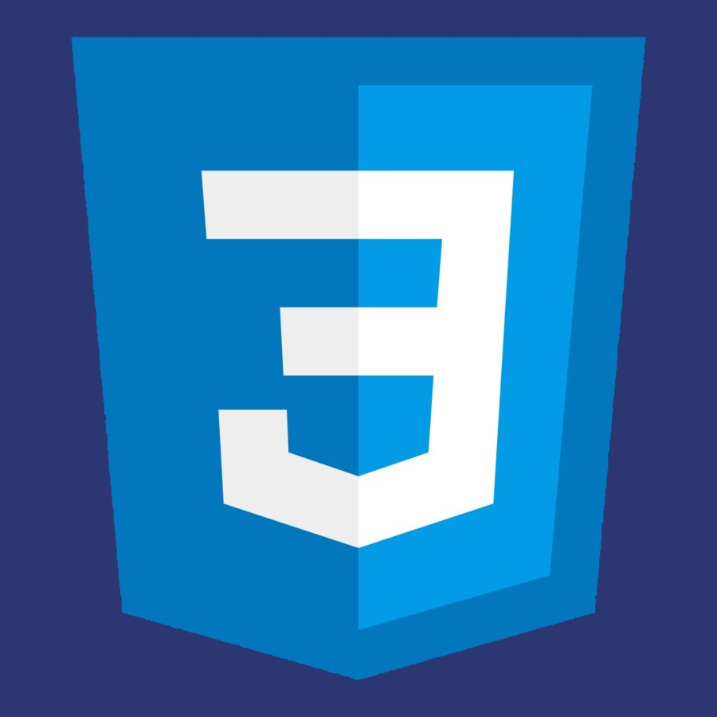

SOBRE MÍ
Hola, mi nombre es Cristian Moreno tengo 25 años y soy de Argentina. Me considero una persona autodidacta y mi pasión por la programación y compromiso me llevó al camino que estoy tomando hoy.
No tengo mucha experiencia en el campo, pero si tengo mucha motivación y el deseo de progresar tanto como programador, como persona en general. Empecé en el mundo de la programación en el año .
HABILIDADES PERSONALES
Comunicación
Creatividad
Dedicación
Disponibilidad
Compromiso
Motivación
INTERESES
BICICLETA
CAFÉ
MÚSICA
GYM
CAMINATAS
JUEGOS
COMPOSICIÓN
VIAJES
HABILIDADES
HTML
60%

CSS
47%
JavaScript
63%
Express JS
23%
MySQL
38%
GIT
15%
SERVICIOS
RESPONSIVEDiseño adaptable a dispositivos móviles.
DESARROLLADORConocimientos en desarrollo de sitios web.